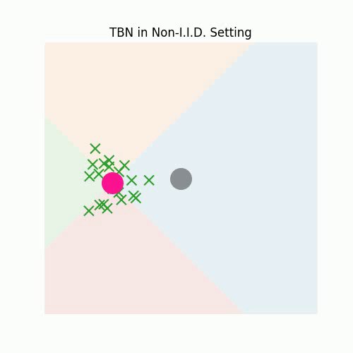
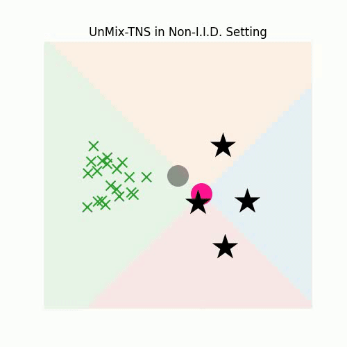
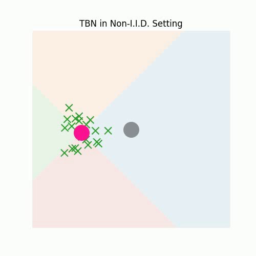
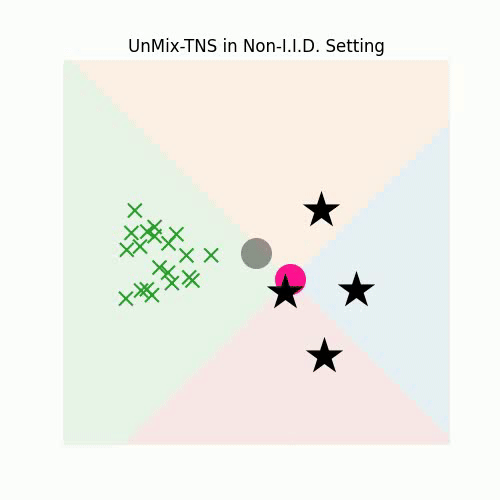

3. Redefining Feature Normalization through UnMix-TNS
Considering the current batch of temporally correlated features \( \mathbf{z}^t \in \mathbb{R}^{B \times C \times L} \), we commence by calculating the instance-wise means and standard deviation \( (\tilde{\mu}^t, \tilde{\sigma}^t) \in \mathbb{R}^{B \times C} \), mirroring the Instance Normalization, i.e.:
\[
\tilde{\mu}^t_{b,c} = \frac{1}{L}\sum_{l} \mathbf{z}^t_{b,c,l},\quad \tilde{\sigma}^t_{b,c} =\sqrt{\frac{1}{L} \sum_l(\mathbf{z}^t_{b,c,l} - \tilde{\mu}^t_{b,c})^2},
\]
To gauge the likeness between UnMix-TNS components and current test features, we compute the cosine similarity \( s^t_{b,k} \) of the current instance-wise means \( \tilde{\mu}^t_{b,:} \) with that of \( K \) BN components \( \left \{ \mu_k^t \right \}_{k=1}^{K} \) as follows:
\[
s_{b,k}^t = \texttt{sim}\left ( \tilde{\mu}^t_{b,:},\mu_k^t \right ),
\]
where \( \texttt{sim}(\mathbf{u},\mathbf{v})=\frac{\mathbf{u}^T\mathbf{v}}{\|\mathbf{u}\|\|\mathbf{v}\|} \) denote the dot product between \( l_2 \) normalized \( \mathbf{u} \) and \( \mathbf{v} \in \mathbb{R}^C \).
We proceed to derive the refined feature statistics, denoted as \( (\bar{\mu}^t, \bar{\sigma}^t) \in \mathbb{R}^{B \times C} \) for each instance. This is accomplished by a weighted mixing of the current instance statistics, \( (\tilde{\mu}^t, \tilde{\sigma}^t) \), harmoniously blended with the \( K \) BN statistics components, \( (\mu_k^t, \sigma_k^t)_{k=1}^K \). This mixing strategy unfolds similar to as:
\[
\bar{\mu}^t_{b,c} = \frac{1}{K}\sum_{k}\hat{\mu}^t_{b,k,c},
\]
\[
(\bar{\sigma}^t_{b,c})^2 = \frac{1}{K}\sum_{k}(\hat{\sigma}^t_{b,k,c})^2 + \frac{1}{K}\sum_{k}(\hat{\mu}^t_{b,k,c})^2 - \left(\frac{1}{K}\sum_k \hat{\mu}^t_{b,k,c}\right)^2,
\]
\[
\hat{\mu}^t_{b,k,c} = (1-p_{b,k}^t) \cdot \mu_{k,c}^t + p_{b,k}^t \cdot \tilde{\mu}^t_{b,c}, \quad (\hat{\sigma}^t_{b,k,c})^2 = (1-p_{b,k}^t) \cdot (\sigma_{k,c}^t)^2 + p_{b,k}^t \cdot (\tilde{\sigma}^t_{b,c})^2,
\]
In this formulation, \( p_{b,k}^t = \frac{\exp(s^t_{b,k}/\tau)}{\sum_\kappa \exp(s^t_{b,k}/\tau)} \) represents the assignment probability of the \( b^{th} \) instance's statistics in the batch belonging to the \( k^{th} \) statistics component. Note that, \( p_{b,k}^t\approx 1 \) if \( b^{th} \) instance exhibits a greater affinity to the \( k^{th} \) component, and vice-versa. We employ the refined feature statistics \( (\bar{\mu}^t, \bar{\sigma}^t) \) to normalize \( \mathbf{z}^t \), yielding elaborated upon below:
\[
\hat{\mathbf{z}}_{b,c,:}^t = \gamma_c \cdot \frac{\mathbf{z}_{b,c,:}^t - \bar{\mu}_{b,c}^t}{\bar{\sigma}^t_{b,c}} + \beta_c,
\]
In the concluding steps, all \(K\) BN statistics components undergo refinement. This is achieved by updating them based on the weighted average difference between the current instance statistics, with weights drawn from the corresponding assignment probabilities across the batch:
\[
\mu_{k,c}^{t+1} \leftarrow \mu_{k,c}^t + \frac{\lambda}{B}\sum_{b} p_{b,k}^t \cdot (\tilde{\mu}^t_{b,c} - \mu_{k,c}^t),
\]
\[
(\sigma_{k,c}^{t+1})^2 \leftarrow (\sigma_{k,c}^t)^2 + \frac{\lambda}{B}\sum_{b} p_{b,k}^t \cdot ((\tilde{\sigma}^t_{b,c})^2 - (\sigma_{k,c}^t)^2),
\]
where \( \lambda \) is the momentum hyperparameter and is set based on the principles of momentum batch normalization. The more a statistic component is closely aligned with the instance-wise statistics in the test batch (precisely when \( p_{b,k}^t \approx 1 \)), the more it undergoes a substantial update.
 


